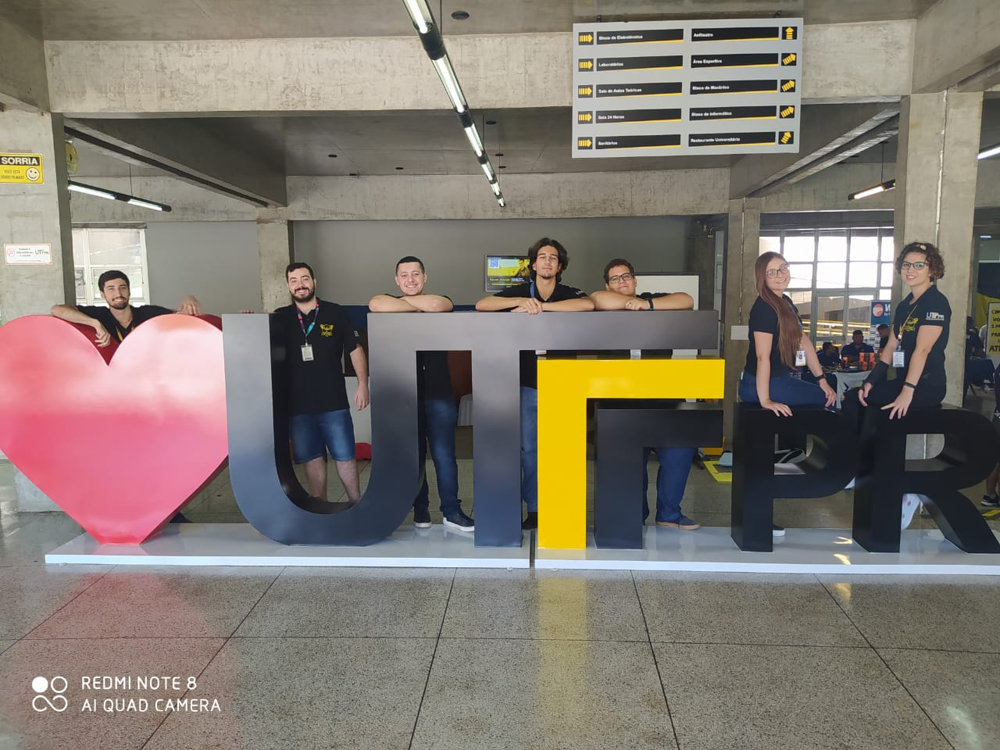

Sobre Mim
Apresentação
Meu nome é Daniel de Abreu e sou estudante
de Engenharia de Software na Universidade
Tecnológica Federal do Paraná no Campus Cornélio Procópio.
Por ser bem novo ao meio do desenvolvimento de
tecnologias de informação não possuo experiências
profissionais, além das minhas participações em
projetos de extensão e no Diretório Acadêmico de
Computação.
Experiências

Dacomp
Faz quase um ano que participo da atual gestão do Diretório
Acadêmico de Computação, na Posição de Administrador dos
Núcleos de Entretenimento e Extensão.
Essa experiência me ajuda a desenvolver habilidades burocráticas
como elaboração de documentos, organização de pautas e reuniões
e o gerenciamento dos membros. Além de habilidades pessoais como
vivência e comunicação.
Logicat
Durante um semestre auxiliei o projeto Logicat a dar
aulas de lógica de programação pra crianças menores de 12 anos.
Apesar do pouco tempo de participação, o projeto
Wolves Futebol Americano
Apesar de não se tratar necessariamente de
um projetoz profissionalizante, ser um atleta em
um time universitário colaborou muito para meu desenvolvimento pessoas
e me ensinou muito sobre trabalho em equipe nesse um ano e meio de participação.
 Daniel de Abreu
Daniel de Abreu
 @D.Abreu_Wr15
@D.Abreu_Wr15
 Daniel de Abreu
Daniel de Abreu
 DeAvreux
DeAvreux